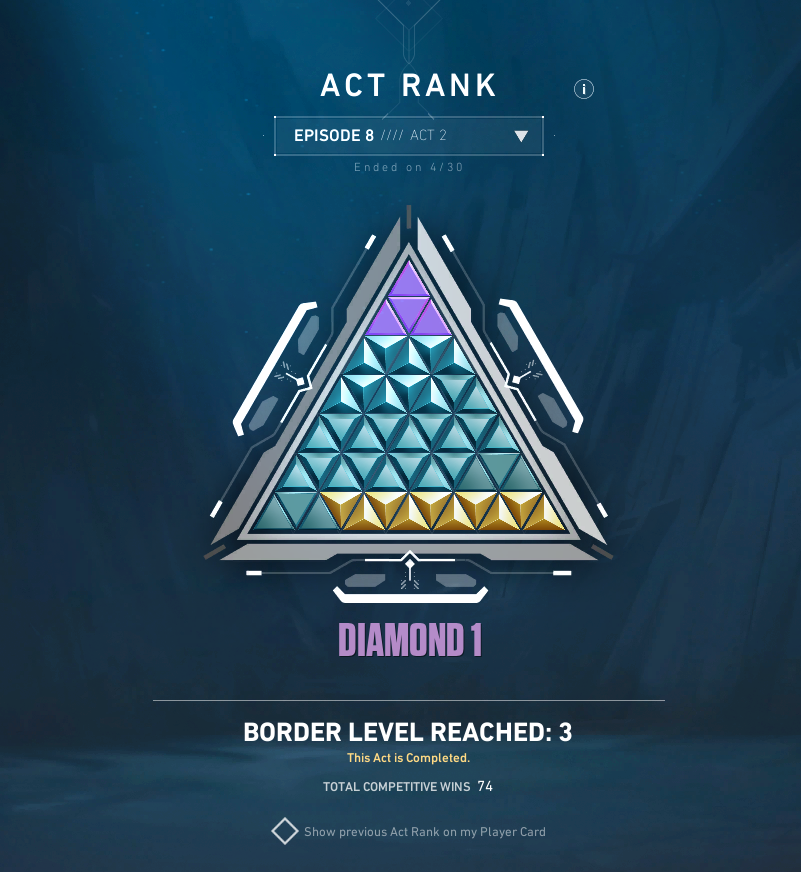

One of my favorite games to play is Valorant. I am a controller main, which means my role is to place smokes that help my team take or defend space on the map. Knowing how to play inside and around these smokes can give you a major advantage during site executes and retakes.
What Smokes Do
Smokes in Valorant are abilities that block vision and control space on the map. They deny information by cutting off sightlines at choke points, entrances, and spike sites, forcing enemies to either wait, push through blindly, or reposition. When used correctly, smokes allow teams to move safely, isolate angles, and take map control with less risk. Playing around smokes effectively is less about hiding and more about timing, positioning, and awareness.
Step-by-Step Example
Place smokes on common defender sightlines when attacking a site, such as entrances from spawn or elevated angles that overlook the site.
Position yourself near the edge of the smoke or just outside of it so you can safely hold space and react if an enemy pushes through.
Be patient and listen for sound cues like footsteps or ability usage before making a move, instead of immediately pushing forward.
After making contact or gaining space, either fall back into cover or reposition to a new angle to maintain control and avoid being easily traded.
Common Mistakes
Using smokes too early, which allows enemies to wait them out and regain vision once they disappear.
Standing in predictable positions near smokes that enemies will commonly pre-aim or pre-fire.
Overcommitting inside a smoke without a plan to retreat or reposition if pressure increases.
BEFORE Placing Smokes
AFTER Placing Smokes
Video Example
Why I'm Qualified To Teach This

Diamond 1 Act Rank Triangle (approximately 6.45% of VALORANT players are ranked Diamond 1 or higher).